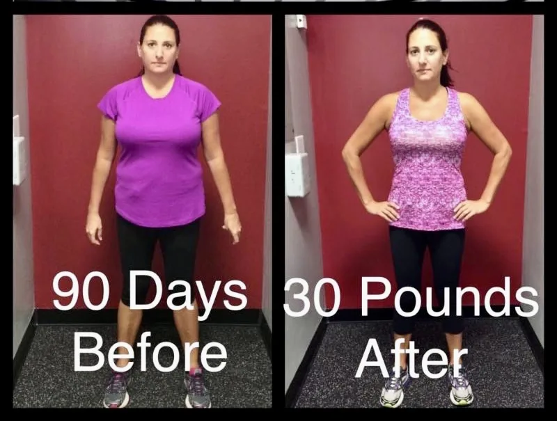
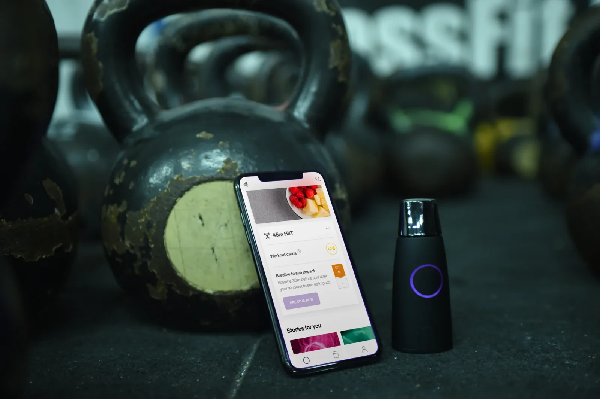

weight-management care
Keep Your
Muscle.
Your medication is doing its job. This is how you protect the part that decides whether the results last — the muscle that runs your metabolism.
Lean-mass figures from DXA sub-studies of the semaglutide and tirzepatide pivotal trials; regain from the STEP 1 extension; adoption data Gallup 2026.
Three months. Then you don't need us.
Most programs want you dependent. We want the opposite. In twelve weeks you learn how, when and what to eat — and you train in a way that tells your body to keep its muscle while the fat comes off. After that, the habits are yours. You carry them on your own, with or without medication, for the rest of your life.
- A 1:1 coaching call every two weeks — someone who actually notices when you drift
- Protein-first nutrition built around your own daily data, not a generic meal plan
- Real human-filmed exercise videos — every movement with its own breathing and tempo cue
- Resistance training that protects lean mass while you're in a calorie deficit
Breathe into it each morning and see whether your body is burning fat or carbs that day. Nutrition stops being a guess and becomes a number you can act on.
- Measure. Metabolic score, baseline breath reading, your numbers.
- Learn. How, when and what to eat — and why it works.
- Build. Strength training that signals your body to keep muscle.
- Own it. You run it yourself, for good.

A GFC Xtreme coaching client, 90 days. An individual coaching result, not a GLP-1 outcome. Results are not typical and vary from person to person.

Your free Lumen device and app — a single breath each morning.
Scan the code for your free 2-minute Metabolic Score — no cost, no obligation.